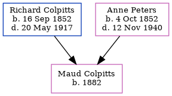

Maud Colpitts 1882 -
[ Home ] | [ Calendar ] | [ Surnames Index ] | [ Family History ]The child of Richard Colpitts and Anne PetersMaud Colpitts, the third cousin twice-removed on the father's side of Nigel Horne, was born in 18821. In 1891, she lived in New Brunswick, Canada1.
Parents
- Richard Byron was born on 16 Sept 1852
- Anne Atkinson was born on 4 Oct 1852
Citations
- Canada Census 1891 - Findmypast (was the daughter of the head of the household)
Family Tree
Generated by ged2site. Last updated on Feb 19, 2025